Starting to remember how far back my against-the-grainedness goes. I recall reading this book in grade school. The take away was meant to be that the ends do not justify the means. My essay argued otherwise on account of Hitler’s Nazi Germany.
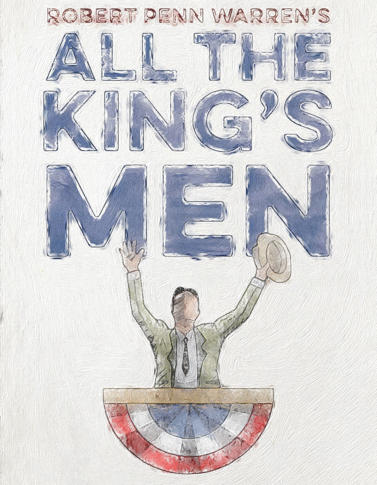
Finally hearing my read on the tail end of Velshi. Y’all follow Alicia’s lead (and generalize her fight against zero sum to cover the reality rejectionist platform).
The one not to miss (and short): On Moving the Needle
Even surprised myself with this one: On Dragons
Former Congresswoman Barbara Comstock gets it. Hope they don’t figure it out for another year and a half, though Barbara.
Thinking about a Trump 2024 presidential run is kinda fun. Be kinda interesting to watch a race that had ended 4 years and 6 months prior to election day.
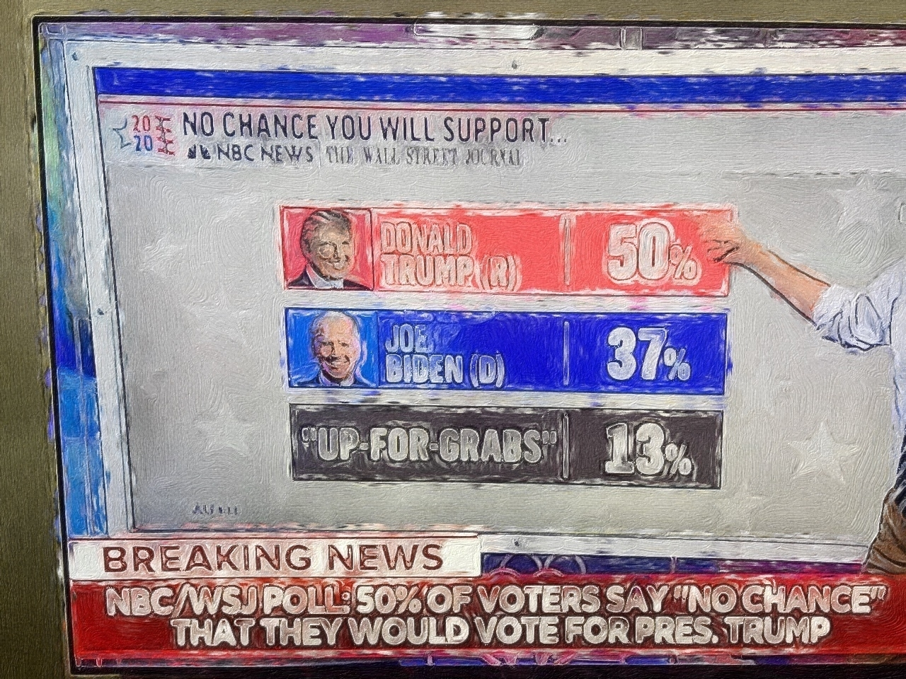
Luna and Blue with their tribute to the late, great John Lewis. Just a little bit of that good trouble.
Now I am kinda torn between “On Business Casual Media” and “So Long Twitter, and Thanks for All the Fish”
Feels about time to update some media monikers that have outgrown themselves.
Main Stream Media ➞ Classical Main Stream Media
Social Media ➞ Business Casual Media
On Dragons

A brief note for short attention spans: stick around if you wanna see how I manage to seamlessly (and I do say so myself) tie together dragon mytholygy, weaving, and politics into one giant point about worldview diversity and problem solving efficacy (even got a Trumpian meme for y’all towards the bottom if that is more your bag).
I have always been fascinated by the common thread stretched about humanity that links up our narratives. The similitude with which humanity engineers itself by independent means.
Take dragons for example. Damn near everyone thought up dragons.
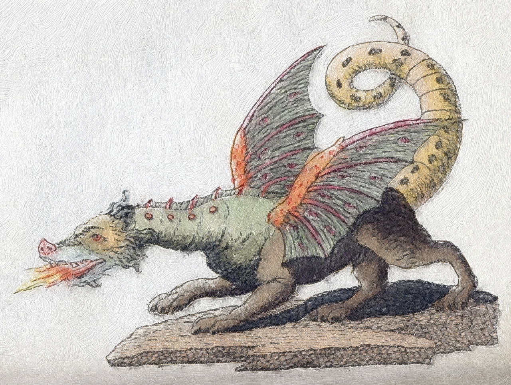
They thought ‘em up in Egypt, where Apep was the very embodiment of chaos.

Egypt also thought up my personal favorite, Ouroboros, who was a manifestation of the snake god Mehen.

They thought ‘em up in Mother Russia where it would appear three really is a magic number. One would assume their mastery of weather and water source got ‘em the gig at the bow of this Russian Viking ship.
This handsome three-headed fella, who goes by Zmey Gorynych, is from Russian folklore. He liked taking human form and seducing him some laadiees.

In Greece, dragons were hurling up namesakes. Here we see a depiction of Athena watching as the Colchian dragon, guardian of the Golden Fleece, disgorges Jason.

Greek dragons were also being raised solely for the purpose of slaying Heracles (pictured here failing miserably is the Lernaean Hydra).
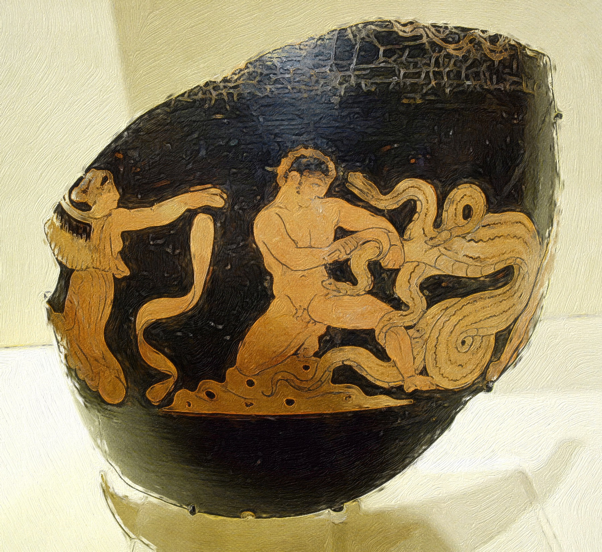
The Greeks also liked stickin‘ ‘em in mosaics, as with this depiction of a sea dragon or cetus.
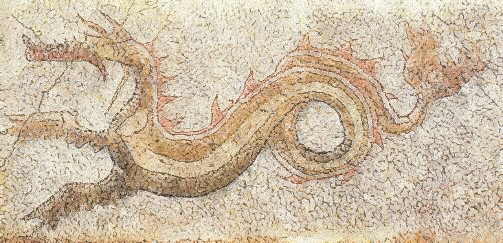
In China, where dragons were thought to bring good luck to those worthy of such fortune, you’ll find them carved into walls. I mean … be kinda awkward not to find dragons at Nine-Dragon Wall … am I right?

The last imperial dynasty of China, the Qing dynasty, chose to stick one of the dragon gods, the Azure Dragon, on their flag.

It wouldn’t be long before the Chinese dragon would make its way to Japan, as evidenced by this Hokusai painting,
as well as to Korea, as evidenced by the murals found at the Goguryeo tombs.
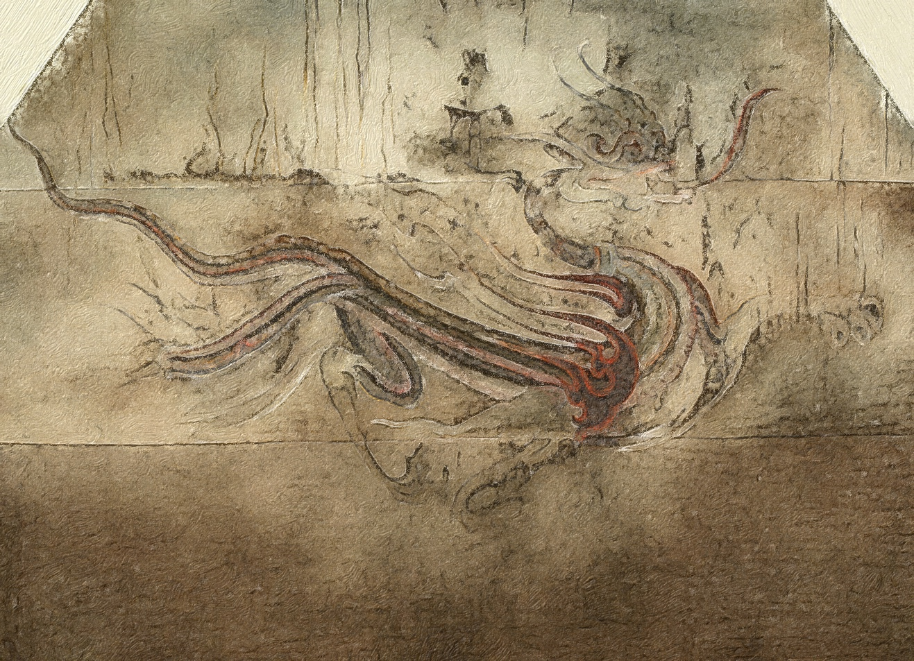
The first known portrayal of a fully modern, western dragon may be found within a medieval manuscript.

Native Americans painted dragons on bluffs. This fearsome piasa bird craved human flesh.
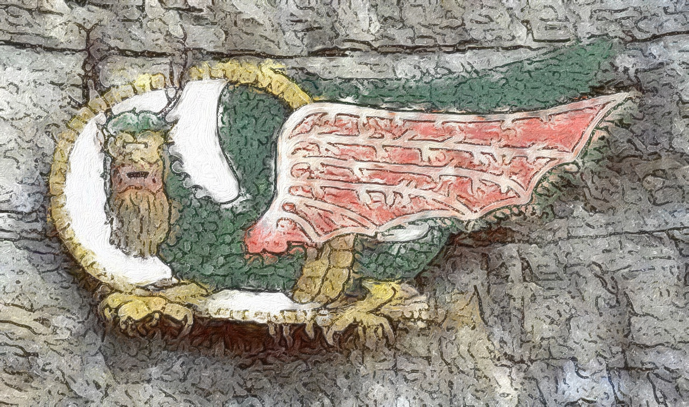
So what is the point of my little dragons of the world presentation? I believe it worth considering the discrepancies and commonalities amongst such cultural invention.
Let us begin with commonalities. The nearest I can tell, the single common thread among these narratives defines a dragon as a serpentine, legendary creature. Let me paint my point metaphorically.
We often speak of storytellers as though they were spinning yarn. It would not, then, be much of a stretch to reimagine them as weavers, and their creations as tapestries such as the two below.
We might think of the universally common as the warp threads running through these tapestries. Something structural. Not the good stuff.
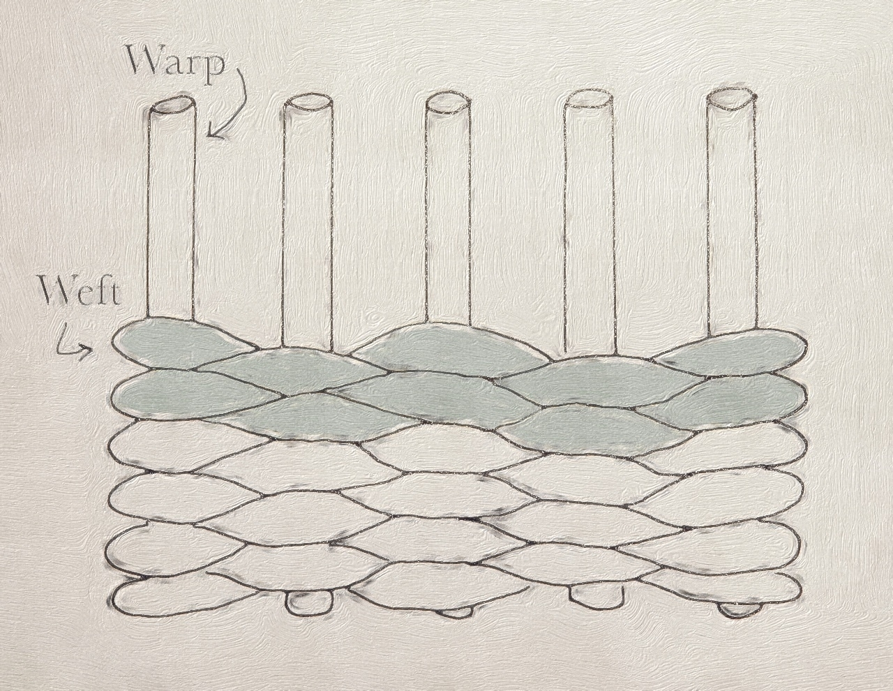
What they all saw the same way isn’t really the interesting bit, is it? Seems to me the good stuff is what each culture thought of a little bit differently, the weft threads of the tapestries.
That which makes the Chinese dragon on the right something entirely different than the Celtic dragon on the left. Different … but no less beautiful … and the world is richer having known them both. Having known them both, what might one weave next?
Consider, then, what invention becomes possible with all things considered.
What might I be able to learn from someone with whom I share nothing but warp threads (were we each provided our very own babel fish … obviously).
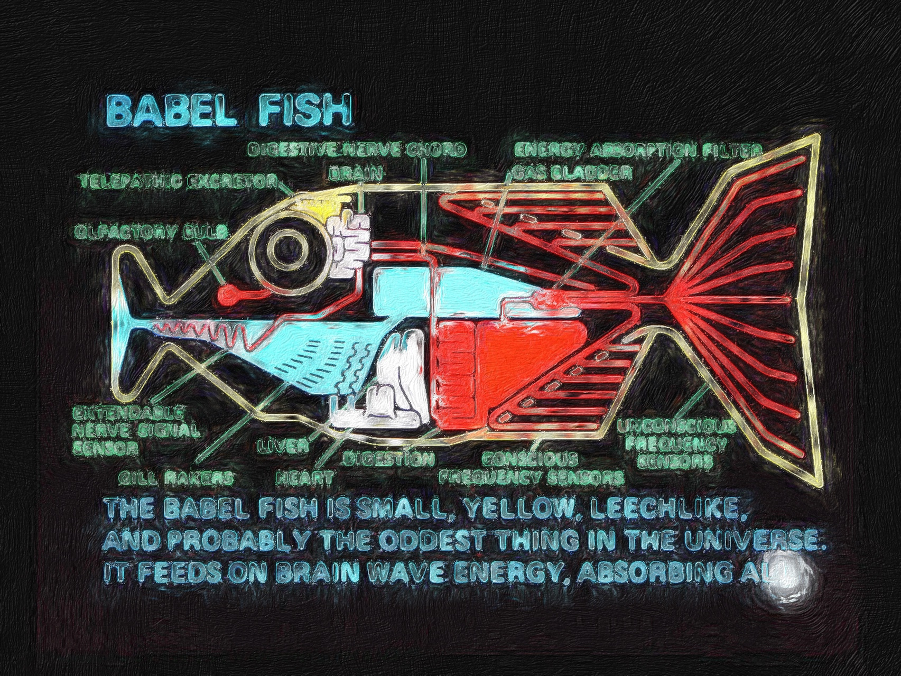
What might he learn from me? After we have finished feeding our fish and gone our separate ways, how might we be affected? What ingenuity might we have unlocked for future endeavors?
Not enough? Not yet convinced of the beneficiality of discrepant embrace? Another example, then.
What must this untouched Amazonian tribe have thought possible that they hadn’t only moments earlier?
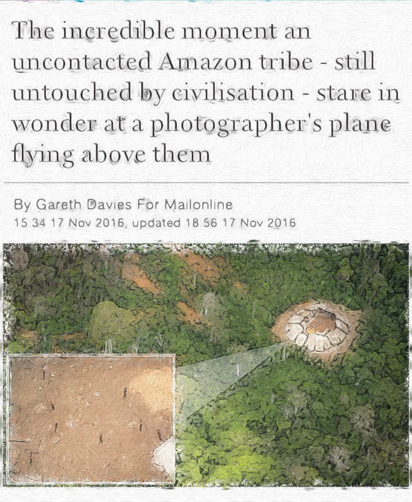
I don’t want y’all thinkin’ I only value discrepancy. We value the shared human experience, that which binds us as a species … the things about our lives, about the human condition, one finds to be as true beneath the canopy as they are in my backyard.
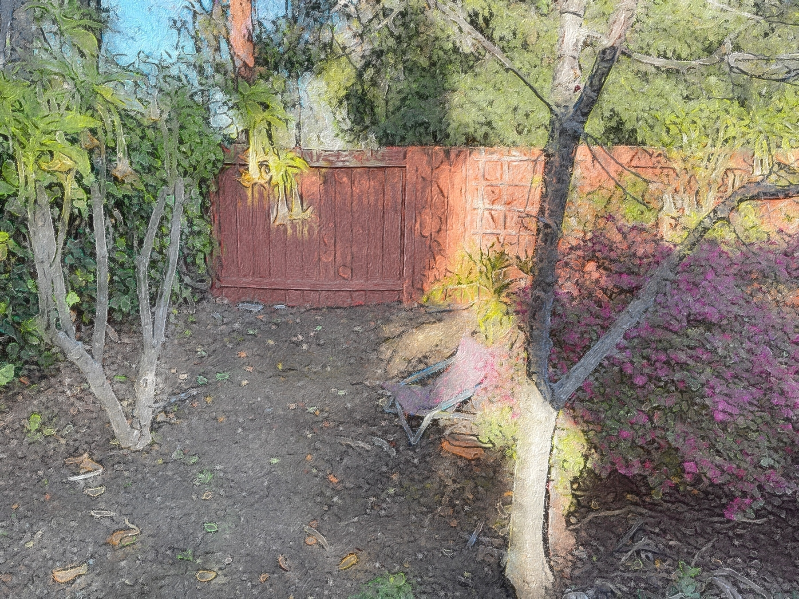
Without such warp threads we might find those outside the purview of our particular worldview entirely unrelatable. We might consider children one such thread. Entirely relatable.
What I find to be most valuable, however, are those weft threads … the good stuff. The stuff that tells us not who we are, but who we might be … who we might become. It is the unique that drives us to want to try out something new … that has us saying, “huh, I never thought to do that,” or “I haven’t thought of it that way before.”
It is the unique that allows us to glance up at the sky and say to ourselves, “I never knew that was possible.”
Thinking about folklore and mythology in this way got me thinking about worldviews, and the current political climate in our country.
When Trump was first impeached, I became deeply invested in the plight of our nation. If I was awake, the television was tuned to MSNBC and I was absorbing all of it. The reality rejectionist platform pushed by the GOP, the milita grooming, the election theft, the fascist coup, etc., etc. You all know the story.
The things is, I was getting there weeks, if not months, before anyone I was seeing on my television (or Twitter for that matter). I began wondering why. I mean … me … a guy with a political knowledge gap the size of those Texan power bills.
Then there seemed to come a moment at which point everyone caught up. Biden was declared victorious.
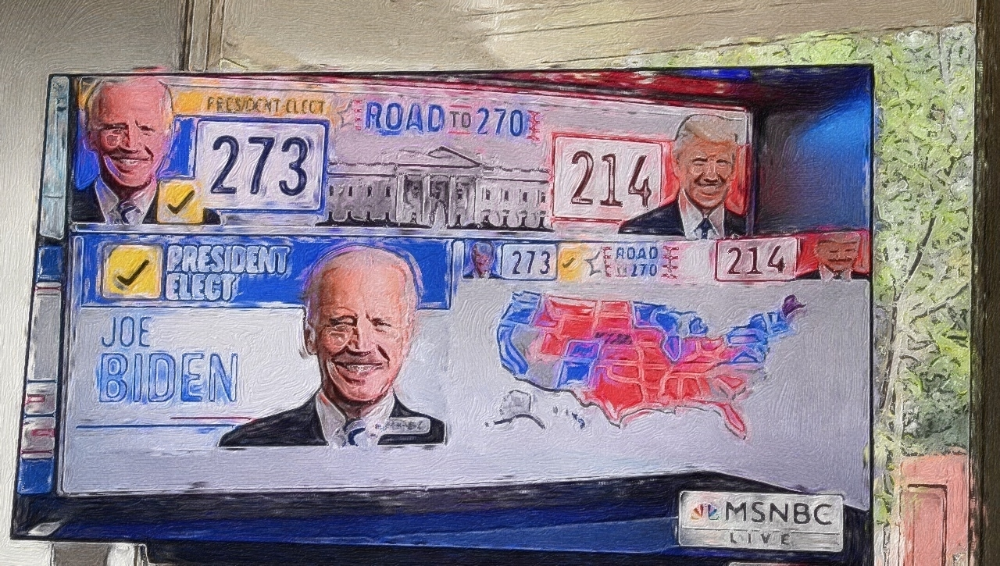
I was caught up in the jubilation
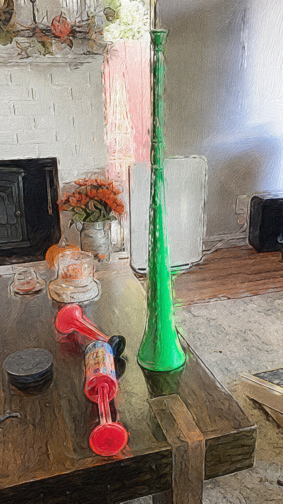
and felt as though, perhaps, the whole divergency irritant had been flushed.
It hadn’t been. Coinciding with the beginning of Trump’s second impeachment trial, even more so than before, my read diverged from any other I could find. Maximum dissidence was reached immediately following the Senate’s vote to acquit, when Mitch stepped up to the podium and began speaking.
Wait … wait … that wasn’t Mitch.

Okay, that’s Mitch. So Mitch got up there and did precisely what I feared he might … he pivoted away from a doomed reality rejectionist platform. My surprise was in how everyone else responded. I have yet to find anyone anywhere not surprised by Mitch that day.
“So what, then, is your point?” you ask. “It seems as though that vuvuzela isn’t all you’ve been blowing,” you say (in a rather accusatory tone I might add). Here is my point with regard to my power to prognosticate.
I have grown convinced that I have uncovered the force at play here. It is precisely that political knowledge gap which has turned me amateur prognosticator. Without the knowledge of political norms and precedents pressing into my mental map of possibility, my imagination would not be limited to what has come before. My expectations were unflappable when met with a world that no longer made sense, while so many clinged to a pre-Trumpian set of expectations. They, consciously or subconsciously (mind is tricky that way), feared the unrecognizable now.
I want to return, briefly, to that Amazonian tribe, staring up at that plane. No doubt you had a similar reaction to my own upon seeing that image, postulating what magic they must invent to explain that which they have seen.
I want you to consider something that perhaps you wouldn’t have thought to consider. Let’s reimagine magic. What if Trump were piloting that plane? (Nailed it, right?)
Of course the plane crashes. It was held aloft by norms and precedents. Say everyone survives the crash. Which group, the planites or the tribe, now possesses the most accurate view of what surrounds them?
Politically, societally, pick-your-ly … who among us has the most accurate view of what surrounds us today?
Well … I mean … you’re not wrong. We have a hell-of-a-lotta problems (and thanks for participating, couldn’t pull this off without ya) … problems requiring masterful weavers work together in fabricating solutions.
Let us, then, consider carefully whom we shall invite to sit down at our table … with which unique perspectives we shall be outfitted.

What might discrepant worldviews or experience engender as we begin weaving? What might we see in the weft threads of our tapestry that we never knew was possible?
On Cycles
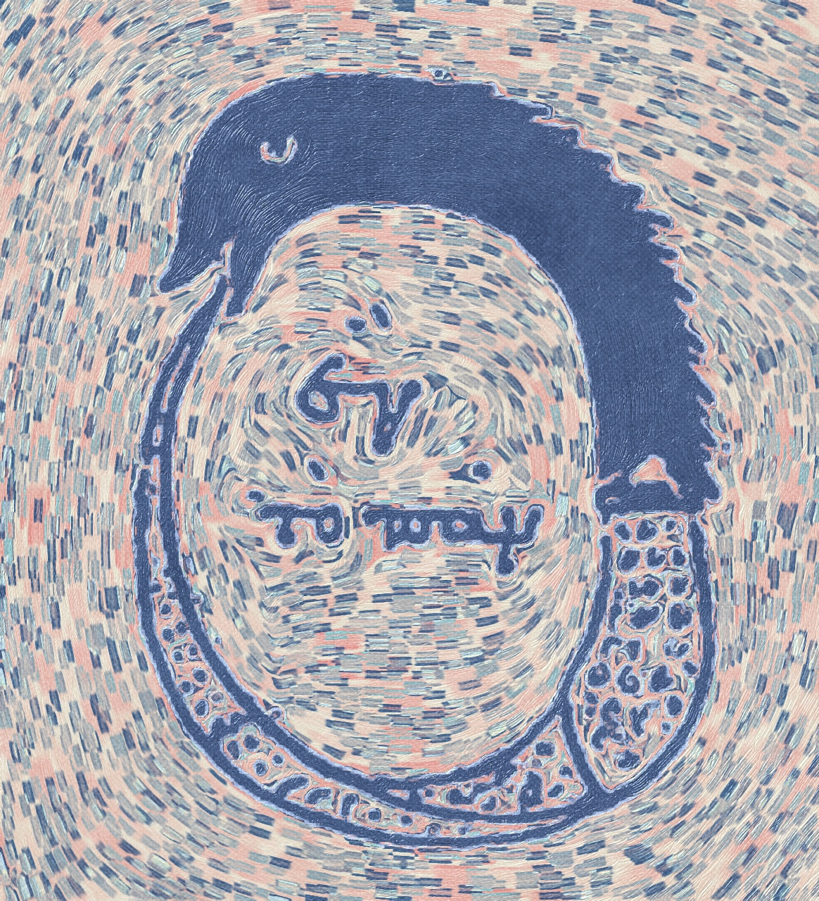
This is a unique inflection point. The weight of this moment makes my bones feel heavier than I remember. Last November … hell … all throughout 2020 … we the people demanded our voice be heard and our will respected. When our legislators stop working for us their concept of civil service must be corrected. Democracy requires participation.
For decades we have allowed ourselves to fall into a pattern of governance where one party advances our nation, with a focus on equitably caring for our nation’s people and with an eye toward global stewardship. After eight years, give or take, the people become seduced by the opposition party (their natural discontent eventually being harnessed and weaponized politically in order to flip the center). This is understandable and works both ways. As with COVID, the work done over those eight years, the progress made, has lagging indicators.
The first half of that time in power is spent course correcting the corporate policies inacted by the previous administration. The second half is spent future building. That future arrives after the eight years are up. This further muddies the water.
The connection between good governance and the people’s happiness and prosperity is muted and difficult to point out for anyone not flooding themselves with the world of politics.
Of course bad governance sticks out like a sore thumb and requires a hell of a good sales pitch (or some perspective shifting event) to hold onto power. So why is this transition different? Why am I calling it an inflection point?
This cycle saw one party flat out refuse to court the people with policy or provide any form of feasible pitch. This cycle saw one party attempt to exploit the bifurcation of our information ecosystem into dualing realities by flooding that system with propaganda.
Never in our history have our politicians so deliberately lied to the American people in a desperate attempt to cling to power. The demography of the people that form our great nation have the old white regime terrified that they will lose their power for the last time.
We have been a minority rule nation for decades now. The discrepancies between both the populations of the parties’ constituents as well as their monetary contributions (upon which the constituents of the other party are dependent) are unsustainable.
Why must one party rule from the minority? Because they refuse to embrace their role as a stable for civil servants. They refuse to put their constituents’ needs above that of their donors’. This last cycle, they failed to produce even a modicum of effort. They would not even gather what they were offering into words in some official party platform. They were not offering anything.
Instead of pitching we the people on why they deserve to retain power, they embraced the most vile forms of weaponized propaganda. They embraced fascism and white nationalism. They embraced a cult to which approximately twenty-two million of our fellow Americans have fallen victim. They embraced immortality by way of drinking up babies whilst wearing little girl faces.
They knew they could not grow their base with such f$&kery, so they looked to abuse the court circuits they spent four years stacking (ask yourself why they deemed this necessary if not to extend their capability to hold minority rule over the American people).
This is an inflection point in our history because the very heart of American identity, the ideals we have spent centuries touting, the documents with which our nation’s forefathers have for so long guided the hand of governance … all of these have become vulnerable. In Trump this nation elected a president that would test every “oh shit” button our forefathers installed. For the first time in my lifetime, I was prepared to go to war for my country.
As Obama surmised while eulogizing the great John Lewis, I felt I could no longer accept freedom for myself while witnessing the subjugation of my fellow Americans. The narrowness of our escape from this trajectory is impossible to over exaggerate.
We endured four years of Trumpism, four years of learning just how powerful a weapon is the bifurcated bubble. Isolate. Pump in propaganda. Pray on worldview rigidity. Pray on those susceptible to cult phenomena. Do this and one may absolutely normalize the absence of accountability at the highest level.
All but a handful within the Republican party were hoping the insurrection would succeed. They were hoping they would retain power. They were hoping they would retain minority rule over this great nation.
For a brief moment, minority rule has ended. We the people have returned legislative power to the party that believes in civil service. There is, however, something of grave importance we must consider. The governmental imprint Trump leaves behind will sound as a death knell for American democracy should the current administration fail to rake the sand.
Should they choose, however, to pick up the reigns and lead, it may be possible for we the people to return to some lesser level of political engagement. Not disengaged, but not dominated by the engagement.
Senator Joe Manchin, if the Democratic party fails to invest their courage in their convictions, if they fail to lead out of fear of being primaried, if they tank good policy to brush back the red … we the people will be called upon once more to safeguard this nation against minority rule.
As arduous a task safeguarding against minority rule may be, merging our dualing reality information ecosystems is the more difficult task.
Senator Joe Manchin, the Democratic party must embrace the power we the people have bestowed upon them. The power we have bestowed upon them in order to restore a people’s freedoms. The power we have bestowed upon them to hold accountable those that have assaulted our democracy, those vampiric vultures.
Senator Joe Manchin, and any other Democrat who happens to be cut of similar cloth, you will do the job we the people have asked you to do, or we … the people … will replace you with someone who will.
On Contact
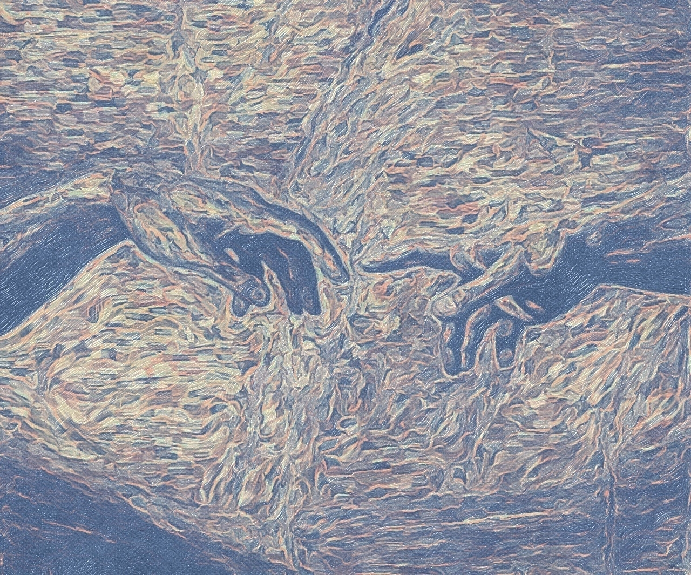
Y’all know how to gauge whether someone has a strong social media game? By whether you can get the guy whose brain runs a mile a minute, Adderall worn off for the evening, and in possession of an underlying aversion to the watching of videos on his phone…
Yeah, get that guy to stop whatever he was doing, bring his phone inside to charge so as to ensure an uninterrupted viewing experience, and truly listen to what you have to say.
(“How?”, you ask. What was his secret? I will tell you what Allen Ellison knew to do that others have failed to figure. He asked.)
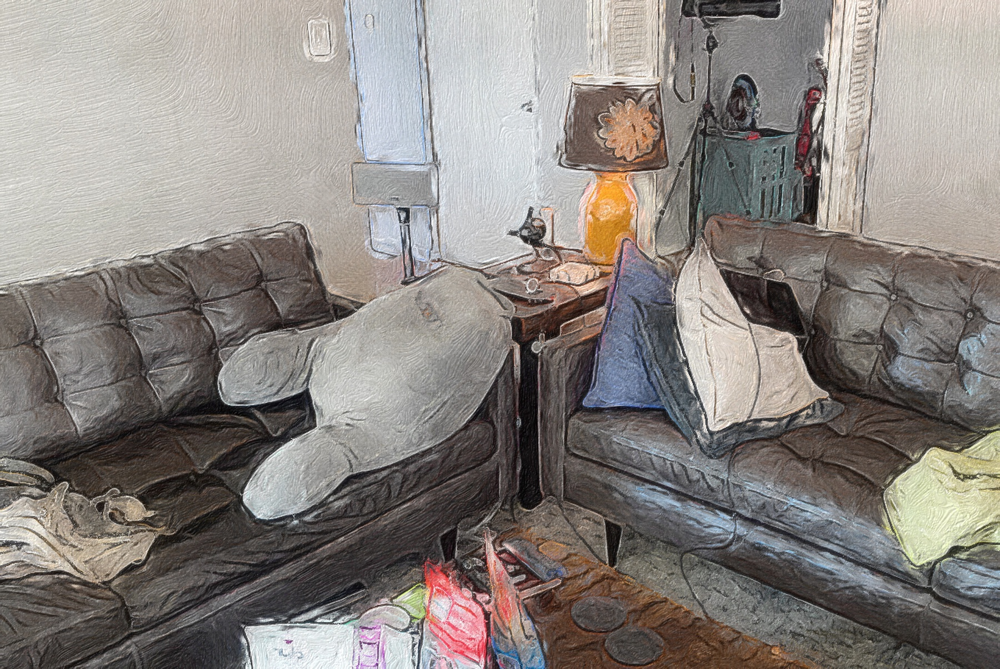
I mean … I was pacing around the living room on account of being so energized (did you catch the delay as I awkwardly typed a yes here and there Allen? Surprisingly lengthy distance to travel with a setup like this, me behind the lamp, phone on the coffee table).
I paced and I listened.
And I heard nothing about which to argue. “Surely something knit pickable,” you say (especially if you’ve ever been holding a knit I came along and picked for ya). There wasn’t.
Full disclosure about my knowledge: Allen Ellison is running a campaign. He was laying out his platform and seeking to engage with Florida’s constituents. My whole spiel is knowing nothing about politics. But some of you already do not believe me when I say that.
And I liked what I heard.
So, how do we help Allen Ellison unseat Marco Rubio? I don’t mind letting y’all know as I am certain he will APPRECIATE all the help y’all are willing to provide. All Senate races are national races until such a time as this nation has safeguarded itself against minority rule.
So how do we help? Hey, y’all remember that time y’all helped Stacey Abrams flip Georgia?
Y’all wanna feel like that again? Feel that euphoric sense of progress? Of accomplishment? Good. So does Allen Ellison. Y’all grassroots types got this.
** Full disclosure: since leaving Twitter in the rearview, I have been unable to make contact. Awkward, I know. Also why this post isn’t in my curated list and may come down at any moment.
On Perpetual Tribalism
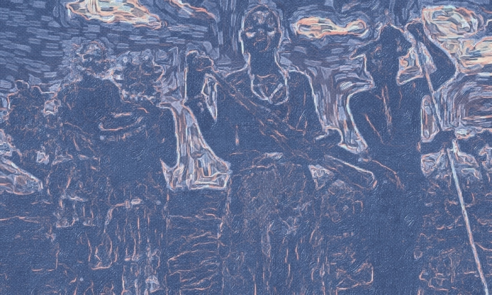
I just can’t get over what people think a large sign that says cancel Jim Jordan could accomplish. Just feels like, if you *eye rolly voice* haaave to throw your money into paint, one might compose something that at least holds a point. But really, f$&k billboards.
The fact of it is the billboards, the videos. You either didn’t need the negative sell, it was to make you feel powerful … or congrats you just convinced someone to dig in another two years on account of your self-righteousness.
With each new month, folks will have forgotten a little more. When enough time has passed without persuasion, well done, by not pressing our advantage you have managed to rehydrate a career that was ready to be crumpled and tossed.
The simplicity of the answer is what kills me.
Last November, I felt a part of something bigger. There was a sense of belonging. Today there is mostly a sense of disappointment. And it isn’t the government. It is the people. Which is worse.
Whatever happened to getting money out of politics anyway?
On What Is Easier
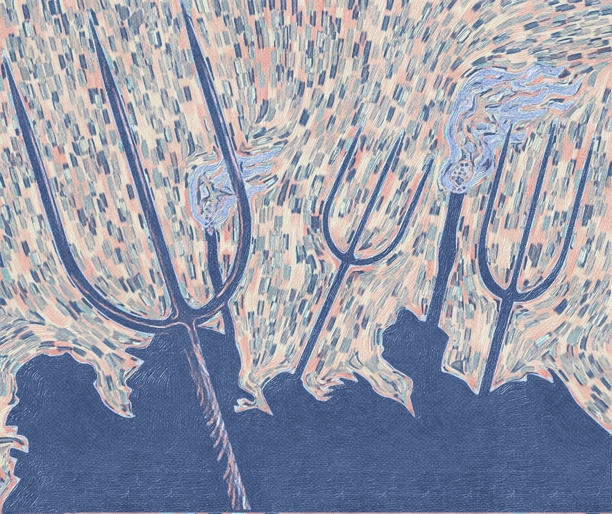
Being on the edge of my seat wondering whether (never even having been in a real fight) I was about to take the two tasers, the two axes, the two machetes, and the mallet (that drove those chain link fence posts into the soil on the San Diego County property we owned for six months), drive to DC, find a place to stay, take a breath, crack the laptop, and find out whether A Brilliant Mind could plan the perfect murder of the fascist coup instigating tyrant Thomas Payne told us was to fertilize that f$&king tree.
So … yeah … that was easier than watching y’all f$&k everything up. Congrats.
On Gotchas
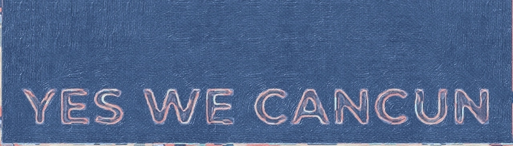
If you are gonna do gotchas, bring some talent and creativity to it, like whoever is responsible for the gotcha below.
Art. Creativity. These, together, once released into the wild, seed the landscape upon which they are planted.
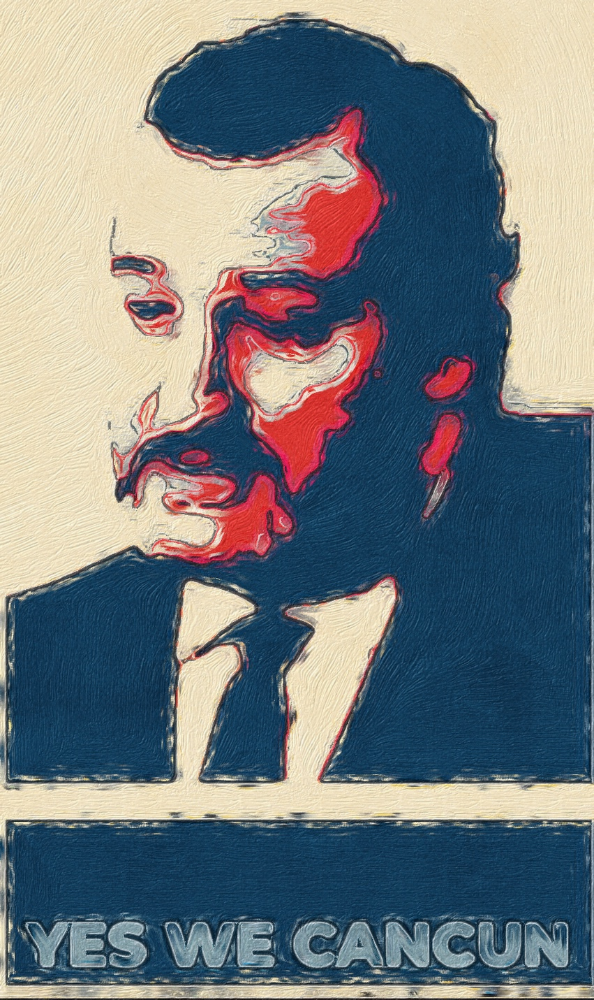
No idea if this was even intended to invoke those peaceful, pandemic-free years under Obama. For all I know, and this is more how I operate, guy was like “yes we Cancuun … hah.” But try not seeing my point in his art now that you have read it.
I just realized, Trevor Noah, that the problem we seem to have is everyone trying to do your job and nobody trying to give you less material.
Playing in the Band

♫ Some folks trust to reeasonn
♫ Ootherrs trust to miight
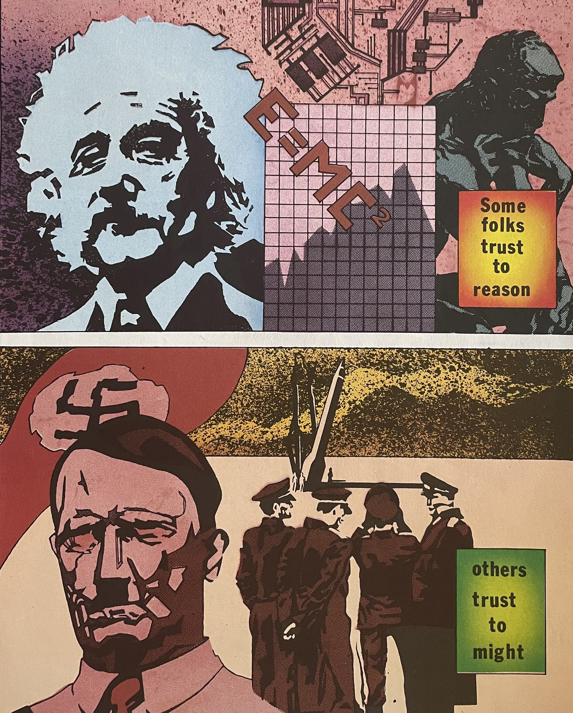
♫ I don’t trust to noothin’
♫ But I knnoow it come out riight
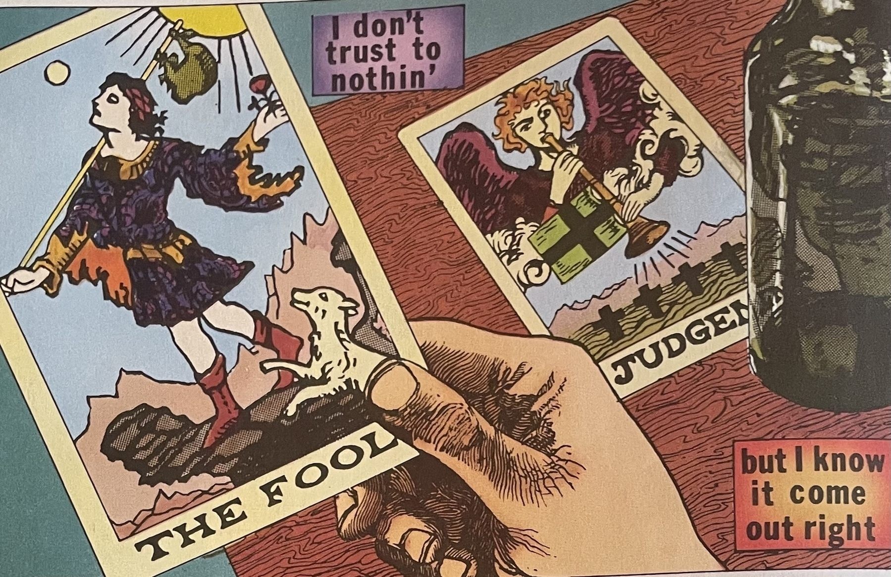
♫ Some folks look for aansweers
♫ Oothers look for fiights
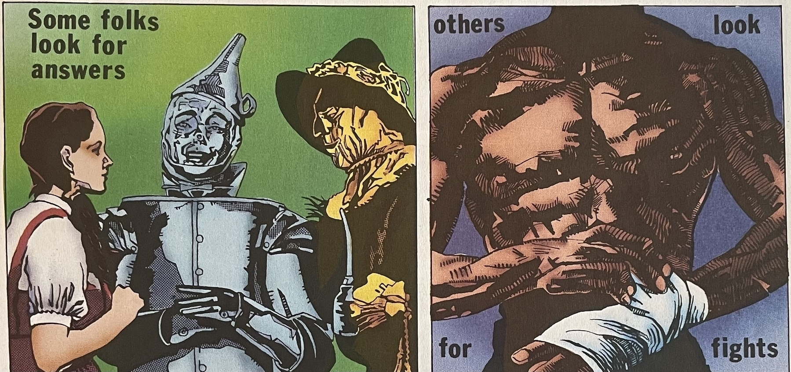
♫ I can tell your fuuturre
♫ Juust loook what’s in your hhannd
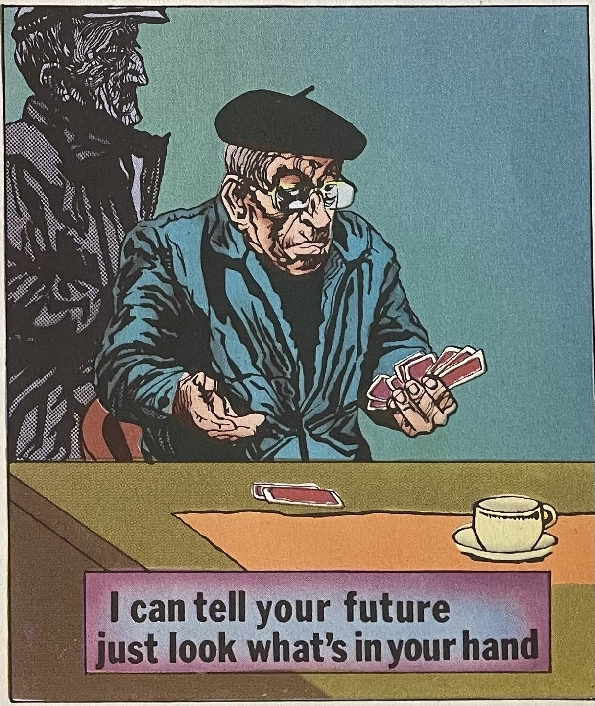
Excerpts from: 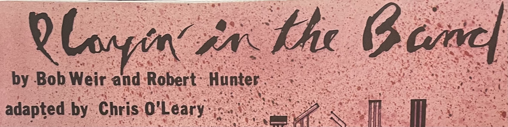
When you break something this badly … pause for a second before putting it back together … to appreciate that you needn’t scramble trying to get things back just as the were … you can put the pieces back anyway you like … you can even make something new.
♫ Now, I doon’t knooww
♫ But I been tollddd
♫ It’s hardd to runn
♫ With the weightght of golldd
♫ Otherr handd,
♫ I have heard it saiiddd
♫ It’s jussttt as harrdd
♫ With the weightght of leaddddddd
♫ Onneee waaayy or another
♫ Onneee waaayy or another
♫ Onneee waaayy or another
♫ This darknesss got to givvee
♫ Now, I doon’t knooww
♫ But I been tollddd
♫ If the horrse doon’ pull
♫ You got ta carrry the looad
♫ I don’t knooww
♫ Whoose baack’s that stroongg
♫ Mayybe finnd outt
♫ Beeforre to looooooonngg
♫ Pleease don’t dominaate
♫ The raap, Jack
♫ If you got nothin’ neeww to saayy
I wonder what problems, Neil deGrasse Tyson, could be solved … if intelligent people decided one day to start treating Twitter like a resource … rather than like a captive audience.
On Bright Futures
Even when I answer the why to their behavior, the pure obstinance required by Josh Hawley, Ted Cruz, and Marco Rubio to block out the reality of where this path ends still gets me. It was never a sustainable, career extending path to walk.
Rejecting reality was never a sustainable model.
Perhaps, had two years of reality rejectionism allowed for them to maintain the majority in the House. Their rejection of reality is why they failed to hold the House.
Perhaps, had four years of reality rejectionism allowed for them to maintain the majority in the Senate. Their rejection of reality is why they failed to hold the Senate.
Perhaps, had four years of reality rejectionism allowed for them to maintain the Presidency. Their rejection of reality is why the race ended as far back as July.
So … for f$&k’s sake … Josh Hawley … Ted Cruz … Marco Rubio … why on your God’s green earth did you believe that continuing to reject reality would give you a leg up on a presidential run of your own.
And with the ink still wet on those indictments coming down the line on account of your little failed fascist coup. Sure guys … ride that adrenaline high … pander to insurrectionists. What better base around which to build a campaign.
You want to lock in the size of your base. Fewer people supporting you means fewer people to please, am I right fellas? I’m sure the world witnessing 2-4 years of a Washington D.C. full of dedicated civil servants won’t make y’all look bad in comparison.
Watching as the pandemic nightmare your rejection of reality (at least publicly) has left behind as Trump’s greatest legacy.
The restoration of our economy … an economy that cratered because of your rejection of reality, surely that won’t move the people … am I right?
Watching as dignity and respect return to reinhabit a White House from which they never should have been driven.
Watching as the World exhales and celebrates what we have achieved … we the people … in rejecting your rejection of reality.
Keep it up fellas. Your inability to pivot is making for some bright futures. It’s just that those futures don’t belong to y’all. They belong to folks like Allen Ellison.
On Raging Bulls
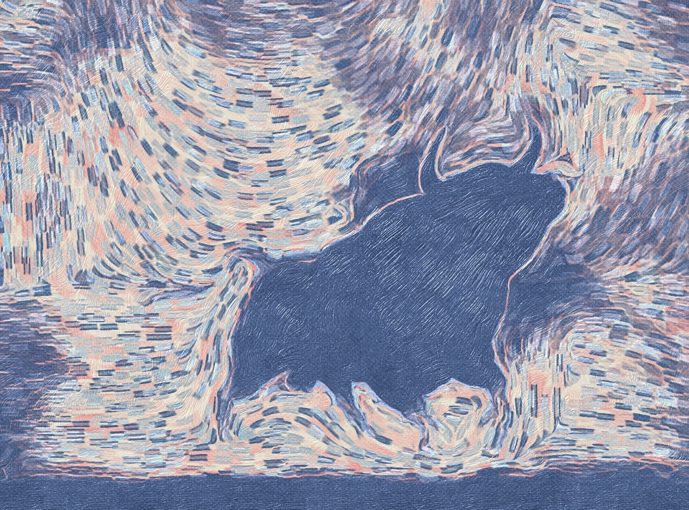
Loving your Trump+ routine, Lindsey. You go get yourself that Trump 2022 base. Okay, hold on, are all y’all at MSNBC rope-a-doping Lindsey? Better let me know now, if so, before someone finally gets around to showing Mr. Graham the future I have chosen to write for him.
I have something I want you to think about, Lindsey.
Never doubt that a small group of thoughtful, committed citizens can change the world; indeed, it’s the only thing that ever has. - Margaret Mead
Now, Lindsey, if a small group of committed citizens are capable of changing the world, what … do you suppose … might a raging bull of a committed citizen be capable of should attentions turn to changing a nation?
Oh thank Christ, you had me worried for a moment that you might go the other way and that would totally f$&k up everything I have left to say.
And it starts with this, Lindsey, I learned something watching you beat that dead Trump. I am sure we are all familiar with some form of the following:
(Breakfast Club MF, ♫ A A A A ♫ Oooohoohoooohyeeeeahhh):
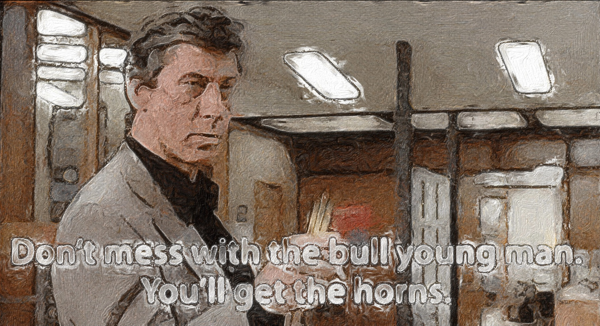
And sure as sh$t, Lindsey, it is a bad idea to come at a bull. He will immediately f$&k you up. Like you aren’t you anymore f$&k you up.
“How is any of that relevant?”, you ask. It’s coming, Lindsey. Be patient. First, I want to tell you about the off-ramp you just blew right by (did Moscow Mitch not signal? Maybe he wanted you to miss your exit).
Well I can just tell ya what he found upon exiting … his 2022 base. He f$&kin’ played everybody (sigh apparently. I was saying all week the only thing that could prevent tearing down the GOP in its entirety is the pivot. Just me and Mitch I guess).
Anyway, Mitch has himself set up nicely for grabbing all those centrists been unregistering with your reality rejectionist platform. His position is too good (f$&kin’ as of that speech) to not bring enough back with his new platform. (Which, incidently, was the reason I wanted witnesses called. I wanted to get to them first. But y’all thought a piece of paper was important … when you will literally be able to watch what occured that day as easily as we all watched in real-time for generations to come).
But you, bud? I could almost … almost … just sit back, and watch. I certainly could if my side were budgeable from the perpetual tribalism they have come to embrace that is poisoning our progress.
And now, Lindsey Graham we reach the part where I get to let you in on why I been talkin’ bull. It’s because I wanted to tell ya something I learned recently. I learned that bulls needn’t be provoked all at once. No red flag need be waved.
You wouldn’t know it to look at ‘em; but, Lindsey, bulls are actually quick learners with great memories. The pestering, the mildy annoying jaw wagging of a man unaware of his own insignificance (I own mine ┌П┐(ಠ_ಠ) Lindsey) … these stack up. And each time you add to that stack, Lindsey, you take your addition out of that bull’s patience. Such perturbulances (felt like making up a word) erode the bull’s patience … slowly … over time (not unlike what happened with your moral center).
Until one day … Lindsey … you almost needn’t have said … nor done … anything at all.
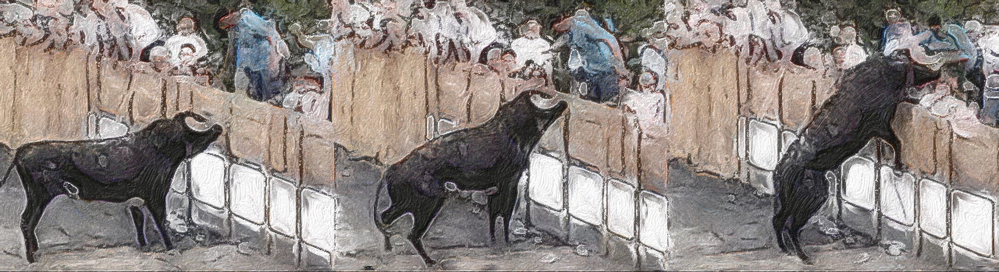
So I’m in. Challenge accepted. Gauntlet tossed. I will take that bet Lindsey. I will change this f$&king nation. Which, incidentally, is how I get to write your f$&kin’ future. Holler, Jaime Harrison, if you’d like the advance copy.
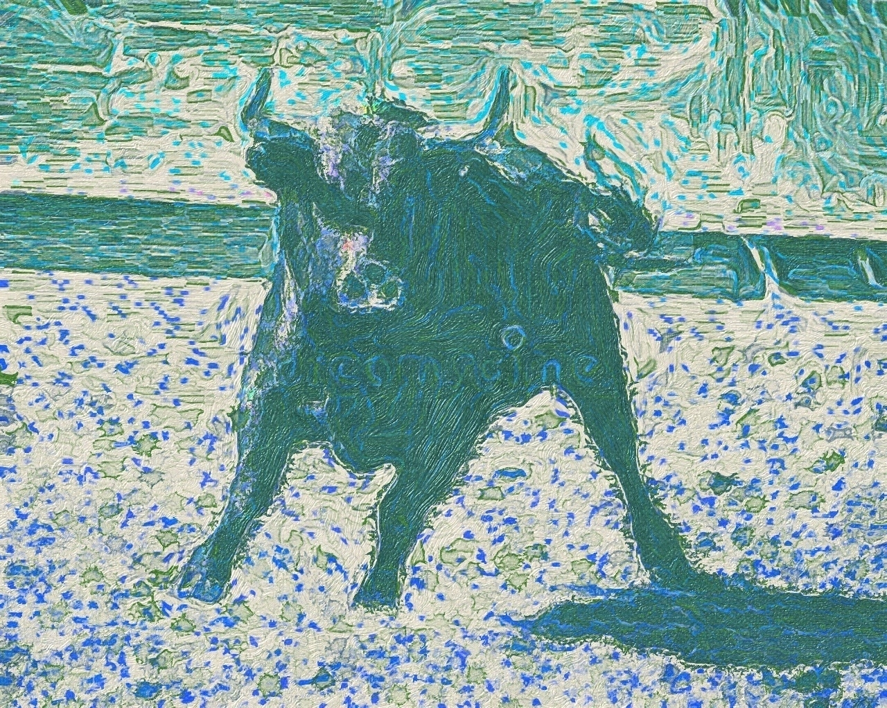
On Moving the Needle

I wonder what it will be like for things to get better after being arguably as bad as they have ever been.
I wonder how all those falsehoods will play after things start to get better.
I wonder how many full fledged COVID deniers will finally encounter this deadly pandemic.
I wonder if red states will continue to suffer needlessly under Trumpian COVID policies.
I wonder what the recovering blue states will look like from those red states.
I wonder how much aid these red states will require from said blue states.
I wonder how those red state constituents will feel when their jobs come back.
When they aren’t so frightened.
When their families feel safe.
When they feel that their families are safe.
I wonder who the ratings leader is among cable news networks.
Wait … who used to be the leader?
Okay … but for how long? Really?
I wonder what changed.
I wonder how many more previously registered Republicans will re-register with reality.
I wonder what it will feel like in 2022 … after two years of feeling better.
I wonder how difficult it would be to reject reality for 6 straight years with nothing but the whole sale loss of jobs and the deaths of hundreds of thousands of American citizens to show for it.
I wonder how much quicker the historical record becomes cemented when that record has been broadcast to the globe via the digitization of every inch of our lives.
I wonder who will write that history, and how the reality rejectionists will come off in retrospect.
I wonder how embracing white supremacy and white grievance as a party platform will age as the demography tips (like flipped GA tips).
I wonder how many more people will come to believe in a shadowy high power cabal drinking up babies in the pursuit of immortality.
I wonder if it will be enough to win elections.
The optimistic vision I have of our future is only attainable when the answers to these questions are what your heart wanted them to be. Those answers are inevitable only if we put in the work. If you are doing what you did last time, you’re doin’ it wrong.
On F$&king Up Careers
Can anyone guess the best way to f$&k up a career in journalism?
Wait until after your pick up your English degree (minoring in Mass Communication ‘cause you were at the best damn journalism school one could hope for after all and just not showing up to class Freshman year at Georgia Tech, and initializing your collegiate transcript with a whopping 0.18 GPA, shouldn’t keep you out of Grady entirely)
Where was I … oh yeah … wait until after you graduate (the first time) to be diagnosed with dysthymia and ADHD.
Okay, who wants to do another? You wanna know how to build ridiculously complex applications (after teaching yourself how to process audio signals into a chroma-based spectrogram to feed to the neural network (after you taught yourself how to build a mother … f$&king … neural network) that can take data from a spectrogram of chroma values and match them to the likeliest of seventy-four patterns forming a musical chord (not the chord, mind you, but the relationship between its notes 凸(｀⌒´メ)凸) which it turns out works because you trained the sh$t out of it since as luck would have it you had already built an application for which you’d figured out how to encode and decode MIDI files making it a breeze to generate 500 hours of audio consisting of all seventy-four variations of the intended matchable patterns multiplied by the twelve chroma values multiplied by the number of octaves within which sound is audible to the human ear multipied by the twelve different MIDI instruments for broadening the timber) and be utterly … unemployable?
Turns out this was even easier. After getting your m0therf$&kn’ a$$ on #GDCymbalta and #MFAdderall, go back to that university you had hoped might turn you into a journalist, pick up that BS in Computer Science, be interested by everything (so much so that it is a struggle not getting lost inside one obsession after another). Then don’t need money. Follow what interests you for at least five years. That’s it (Does the bitterness come through? Kinda worried the bitterness isn’t coming through).
Did y’all think it would get complicated again? Nope. In this country, if you don’t build a resume by working for someone within five years of your graduation … you are un-f$&king-hireable in Silicon Valley my friends.
But, OMG, put your projects on a resume and you are every recruiter’s wet dream. So you get to do tons of interviews. Feel like spending a day on the Google Campus. You got it my friend. Wanna shoot the sh$t with some Apple engineers over the phone? Done. I still get emails from recruiters for sh$t I stuck on LinkedIn like a decade ago.
Bonus if you read this far:
I embedded an easter egg in that runon sentence. Took a dual-brain to create it. Unknown as to whether it takes one to spot it.
Still here huh?
Anyone interested in how the 0.18 GPA came about? The college adjustment course I spent like two weeks attending (the one failing to mention classes were f$&king droppable), despite my never returning the rest of the quarter, gave me a ‘D’.
What? Fine, okay, I will tell you my secret. How to earn a college degree with some undiagnosed ADHD.
⑴ Be able to pull out a ‘C’ on any test you take … without studying OR showing up to class. (Notice that a ‘B’ will be necessary should the professor enjoy popping quizzes and grading attendance).
⑵ Should problems arise with ⑴ (maybe you couldn’t get yourself to class for a test or a project was going to take more than thirty minutes) ya better drop that sh$t quick, there are only so many ‘F’s you will be able to carry should you want a passable GPA.
⑶ Once you’ve clawed your way to Senior (if year f$&king seven is still called Senior) year, you finally get to relax a little. No f$&king graded attendance. Classes feel like a little book club. The essays are a snap. Simply wake up an hour or so before due, eat a bit of breakfast, and about thirty minutes before class get situated and start writing. Bring your finished paper (that is only three pages long ‘cause by now the professors are only f$&king interested in what you have to say that they haven’t heard before) and hand it in. Easy peazy. All the ‘A’s on those papers cancel out any pop quiz bullsh$t.
Recognizing Major and Minor Chords
Not sure yet why the frame rate dropped to shit but the major and minor chords coming in over the Audiobus port are being correctly recognized.
Knotting Tools
For those unfamiliar with decorative knotting, the first thing you find yourself doing when starting to get into it is obsessing over your knotting tools. From stitching together a custom tool roll within which to store the tools…


to creating unnecessarily fancy landyards from which to dangle the tools…

to attempting to cover damn near every tool with some kind of Turk’s Head…


Camp Chair Bag
Totally forgot about the bag I made to stick the camping chair inside. Composed primarily of a big a$$ Turk’s Head knot with a plait of some kind serving as the strap.


The Maddow Chord
Anyone wondering with which chord pattern Rachel Maddow was primarily speaking during last night’s broadcast may now consider their curiosity quenched. The chord pattern with which she seems to enjoy projecting her prose would clearly be that of 9♮11(♭13).
 Anyone wondering with which chord pattern Rachel Maddow was primarily speaking during last night’s broadcast may now consider their curiosity quenched. The chord pattern with which she seems to enjoy projecting her prose would clearly be that of 9♮11(♭13).
Anyone wondering with which chord pattern Rachel Maddow was primarily speaking during last night’s broadcast may now consider their curiosity quenched. The chord pattern with which she seems to enjoy projecting her prose would clearly be that of 9♮11(♭13).Some spectrum visualizations and top five most likely candidate lists for a couple of the neural network projections.


The log entries for the above outputs with a bit more specificity.

And, as we can see from our projection history, there really weren’t any other chordial contenders.

Perpetual Groove
While looking through old photos I came across these assets for an application I did a while ago. I thought it might be fun to write a guide on how one might go about throwing a whole lot of work at something and never actually finish it. The name I gave this application was Perpetual Groove, and the first thing on the agenda is to go nuts creating an icon for it.

Next, ponder the scale of your project. It should clearly be bigger than any one person should consider. Maintaining your application should not be a consideration.

Now, waste a shit ton of time on icons. I mean … don’t worry that all that detail is undetectable at application scale.

Once the basics have been established, we can begin adding complicated and unnecessary functionality such as MIDI file import and export capability, a transport complete with jog dial, and full editing capabilities.

And if you are parsing MIDI files … just build the parser yourself. Hex code is fun, right?

Definitely support both portrait and landscape. So necessary.

Go f$&king bonkers on the notes while working out the geometry.


And be sure to get extra fancy when considering animations.


Like, wouldn’t it be cool if the horizontal scrolling felt three dimensional? Make that sh$t happen.


Did I already mention the notes?


Okay, good. Moving on. Now that your application is practically out the f$&king door, this is the perfect time to relocate. This will give you 2-4 weeks away from the project entirely. The goal here, of course, is to lose track of all that unnecessary complexity you have thrown into your application.

But let’s stick with the previous screenshot. Did anybody notice the appearance of still more icons in the editor? You never want to stop injecting unnecessary complexity into your application

Once relocated and finished unpacking, revisit your application. Notice how all that complexity leaves you with no real feel for where you were or how to jump back in. The perfect time to start a new project, am I right?

And if anyone takes an interest in this guide, I will make another for Chord Finder. The complexity only goes up folks. We are talking signal processing, neural networks, low level graphics, Swift frameworks that are themselves wrappers for C++ frameworks, etc., etc.
Where Meaning Goes
Where meaning goes to die
Where smiles lie
Where mild manners pander to appease
An obfuscated aura
Hides well malignancy
A spirit merely spoken of
Fills not with love
But with hot air and emptiness
A vagabond of vacancy
A spirit lived distends
To hold the breadth of life
In this place it is all talk
Walk and talk
Walk and talk
The efficacy with which
Emptiness fills space astounds
Pestilence personified
A hallowed face and hollow heart
Think not that perceptive clarity
Belies similitude
If ever I had meaning
It has died
Could I purse my lips to smile
It would lie
My spirit quivers
With complacency
But, are not my manners mild?

Song in C
The better version of a song I found from 2008 that abruptly cuts out with 40 seconds remaining (which I trimmed out) but the whole thing is generic so nothing missed really
16 Bar Chord Progression
A 16 bar chord progression that I came up with for testing the neural network I trained to recognize musical chords. For some reason I like the way it resolves when looped.
Remote Tray
With a fancy new pipe stand to use, the drawer organizer I had sliced into a remote control tray was looking brutish …

So I made a new one out of Wenge and Bloodwood


Pipe
A look at the electronic pipe I made for vaping nicotine

Start with one fully functioning electronic pipe:

Create your own wooden shell for holding the electronics of the perfectly good pipe you plan on destroying:

Transfer the innards, a little light soldering, some protective clear coating, and voila:


Dugan's Collar
A look at my finest decorative knotting achievement, a collar I made for Dugan. The bulk of the collar is a double-edge plait. I invented knots to form each of the bear shapes. I then held my nose and stitched the bears to the braid.


The dancing bears I used as reference


On Ending Minority Rule
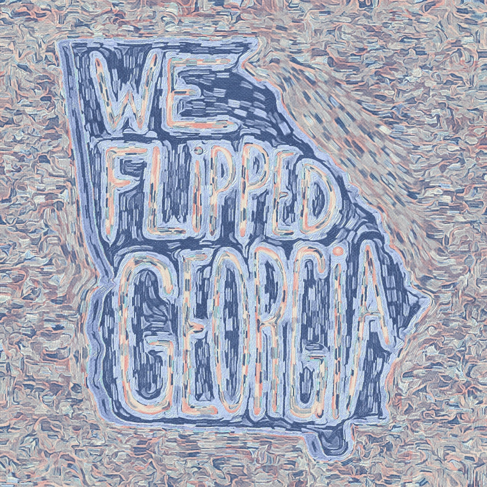
Minority rule over WE THE PEOPLE comes to an end in 2021. Everyone strap the f$&k in. Everyone mask the f$&k up. We’ve got a long way to go and a short time to get there. But goddammit, this Northside Hospital baby can f$&king feel it in his bones.
This is the moment. This is the mother… f$&king… moment. The moment when the momentum shifts, when the forming of a more perfect union, a true multicultural democracy for the land of the free, becomes measurably closer to inevitable than it is to unfathomable.
I need this. I mean I f$&king NEED this. My home state, the state that made me, the state of Georgia, needs this. Our entire country needs this. The whole… f$&king… world… NEEDS… THIS! So let’s get to work. Let’s make it happen.
On Political Analysis
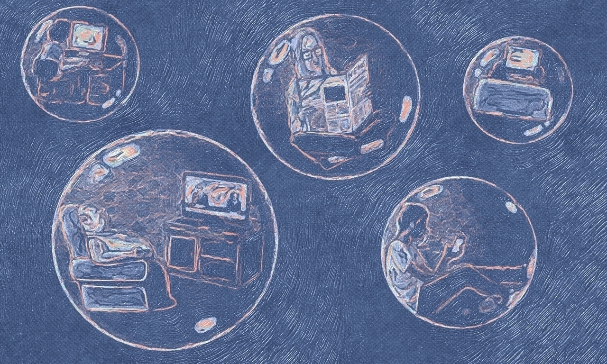
Any postgame analysis must account for the current ecosystem by which we download information in this nation. The one which bifurcated our society into two distinct bubbles. I could just as easily have gone with echo chambers, analogically speaking, but there is something mesmeric about bubbles that better suits my mood. So let’s have a closer look at what lies within these bewitching bubbles.
Let’s consider the first bubble. Here you’ll find such familiar factions as all-of-the-f$&king-left and the NeverTrumpers. With these two resident groups, bubble one is unique in housing a complete representation of our nation’s traditional two party system. This, predictably, generates much discord; however, you’ll find all bubble one denizens united behind a globule cause: the restoration of observable reality as a basis for civil discourse.
Let’s move to the second bubble. Here you’ll also find some familiar factions like the GOP and the KKK. To fully comprehend the complexity of bubble two denizens; however, we must familarize ourselves with some relatively new additions. Are you a white nationalist eagerly awaiting the commencement of your race war, fearing that an evolving American demography might minoritize you? Then perhaps you are already acquainted with the Proud Bois. Pizzagate got you down? Perhaps Q is not new to you. As with bubble one, we may tease out a characteristic universally applicable to bubble two denizens: the uncanny ability to house diometrically opposing viewpoints within their skulls. Tragically, this trait leaves bubble two residents tremendously susceptible to both propaganda and cult phenomena.
Let’s consider what the two bubbles have in common. Within each of these bubbles something magical happens. An entire reality blossoms within each bubble. An existence so colorfully complete that bubble residents begin to believe that their bubble must hold all of existence. Spend enough time within a bubble’s confines and any memory of a greater reality, of a world outside of the bubble, fades away like the colors of a weathered “these colors don’t run” bumpersticker.
If we conduct a direct comparison between the two bubble realities, you’ll notice that they diverge in some fascinating ways. Take the first bubble. Within this bubble it is a widely held belief that our norms and our precedents alone can protect our democracy. Naive, I know, but bless their hearts. Bubble two, in contrast, believes these same norms and precedents to be the insidious tools used by agents of the deep state as they work towards democracy’s deconstruction. And check this out. In the second bubble … and seriously you won’t want to believe me but I promise you this is true … in this second bubble millions … yes millions … of people find it totally plausible for their to be a shadowy, high power cabal drinking up babies in pursuit of immortality. Suffice it to say that among the myriad of bubble one denizen concerns you’ll not find any mention of baby drinking.
Now ask yourself why such disparities between bubble realities? Cult phenomena can be tricky so don’t feel bad if you can’t think of the answer. I can’t think of it myself. What greater implications might we find concerning the bifurcation of our information ecosystem? How would those implications affect political messaging? What does this bifurcation mean for mainstream media? Is “mainstream” still an appropriate moniker for applying to the media outlets we intend to reference?
What does the ecology of dualing reality information ecosystems mean for political analysis? Don’t worry if you don’t know this either. I sure as sh$t don’t. But I expect it’s consideration would be integral. Full disclosure, I am admittedly biased … for I am obsessed with this information ecosystem quandary … as the frequency with which I recite the following will attest:
Dualing reality information ecosystems, worldview rigidity, and the power of propaganda may be considered the root problem from which we have birthed every crisis we now face. Solving it is prerequisite for progress … perhaps even prerequisite for halting our devolution.
On Accountability
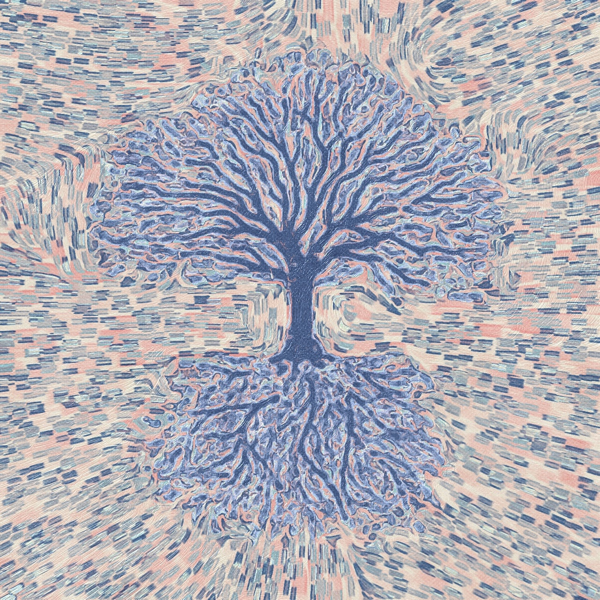
Everyone keeps acting like Trump is a f$&king mob boss controlling those around him. F$&k that sh$t … he is the bullsh$t babbling baboon puffed up like an orange balloon that we all clearly see him to be. Trump is the f$&king tool. His enablers built the propaganda machine for peddling this cult of personality as a means for safeguarding their minority rule over our nation.
I am not quite sure how we are meant to judge psychopathy where accountability is concerned, I can’t quite put my finger on a true psychopath’s capacity for comprehension. I have no such knowledge gaps when it comes to non-psychopaths utilizing weaponized psychopathy to achieve a stranglehold on power … willingly committing treason to protect that which they have gained.
The constitution had an answer for Trump. Enablers … such as Lindsey Graham … publicly parted ways with any pretense of public service … liquidated their constitutional oathes when the Senate chamber was recast as a kangaroo court. They chose subversion.
When COVID broke like a rogue wave across this nation … they once again saw an opportunity to embrace the contemptible whilst scrambling to shore up their dwindling authority. These enablers sought to utilize the disruptive chaos produced by a plagued nation to amplify their efforts at disenfranchisement.
How pleased must they have been upon learning that the virus was disproportionately killing more brown and black Americans than it was killing white Americans. The virus … itself … became a tool. Those we speak of as minorities in this nation … those who when we add them together shall soon become a majority … they were the ones in the eye of the storm.
What perhaps began as a political stance born of stupidity or stubbornness or something else entirely … had blossomed into fresh opportunity … an opportunity for our elderly white ruling class to roll back the color-to-white ratio of our populace … herd immunity very quickly became the official federal COVID response … tapping Atlas simply emboldened them to tell us so.
Lindsey Graham, Mitch McConnell, Bill Barr, every GD GOP senator, every f$&king GOP member that has openly embraced these actions … or whose solidarity is shown through silence … these are the responsible parties. These are the people for which we must ensure accountability.
These are the vampiric vultures whose feathers we shall pluck … for WE THE PEOPLE must protect what we hold precious from such men and women … and make examples of them for future generations … examples we shall include in our lesson plans when teaching our children’s children the history of this nation’s Tree of Liberty.
On Tipping Points

What I thought was a tipping point for movements of equality, I have come to recognize as a tipping point for minority rule over this nation.
Our demography has shifted past that point which triggers the old white regime to brazenly subvert American democracy in one last ditch effort at clinging to the power it has held for so many centuries.
This is not sustainable. Our nation must be safeguarded against minority rule.
The shape of this effort, of the magnitude of this challenge, and the inevitability of a positive outcome … all such shapes remain obscured as the shadows of too many moving parts mingle and mate like shadow dancers projected upon the wall of Plato’s cave.
On Sparking Dumpster Fires
The general consensus across the Twittersphere with regard to Trump supporters goes like this: they are morons … Hillary was correct to call them deplorables … these are the dregs of our society.
Whole lotta truth here. The problem falling by the wayside for a myriad of reasons is that the percentage of people for which this provides an accurate description and the percentage of people that fall under the label “Trump supporter” are divergent.
What we must understand … and work to eliminate … is the why. For some f$&king reason … too many f$&king people are squaring their perceived reality with an acceptance that our societal dregs have blossomed into 49% of our populace. I am still not sure how they are squaring the ease with which millions in this nation have found it totally f$&king plausible for there to be a shadowy, high power cabal drinking up babies in pursuit of immortality.
The degradation of journalistic credibility, the rise of outright like-you-learned-it-in-school propaganda being fed to our nation like news (but let off the hook as entertainment), the degree to which social media has supplanted traditional news in our information ecosystem, the bifurcation of our information ecosystem into two unbridgeable dualing reality echo chambers … these things are what one needs to spark the dumpster fire within which we find ourselves.
I can count on two hands the number of people I have come across with appreciation for this. The hand count drops to one when we refine our set to include people who realize that this ecosystem must be deconstructed should we hope to regain the ground we have lost … to perhaps progress further than we have previously been. Those within reach must be deprogrammed. Those unreachable must be drowned out.
I haven’t yet found a single soul interested in helping me work out how this might be achieved. How we might merge our echo chambers so that we might once again share a collective voice. There must be a return to civil discourse or the fabric of our society shall unravel past the point of patching. We must all inhabit a common reality should we ever hope to find common ground. The rage is properly placed but progress would require more of us … and … at the very least … it will certainly require we understand how the fire started.
A Sorted Affair
A sorted affair, like the little girl’s hair
A libation on information
When you can trust nothing you’ll believe anything
Conscious or conscientious? Which? Either?
Break like summer sun through cloudy sky
Or milky puss through broken sty
Wary should we be
That our eyes don’t paint the leaves
Here there be monsters
The likes of which I’ve never seen
Shimmy up and down the stalk
So I may tell you what you’ve seen
We breathe, we breed, we need to explain
Awake we frighten fosterlings
Adjudicate accessibility
Drown out objectivity
Bleating axioms angrily
To taint with torpid movement the last of man’s humanity
The earthworm eats the shit we leave and
Gives it back for us to seed
Who ingests our karmic waste
The kids may play like a snow day
Constructing existential effigies
But, the fires won’t go out and now
It’s getting difficult to breathe

An Empty Pocket Sailor
An empty pocket sailor
Drifting along the currents of cohabitation
Tattered sails hang hidden
To all save crying eyes
Alone from earth to sky
An inverted intentation
Wearing a strapless soul and
Paper boots with starving roots
Howling silence at the satellite city
Lupine speech with a laudable lisp
Transient taste
And aches to be kissed
Crumbling mortar means weakening walls
Within his house of cards
The Jack of Clubs can’t hold long
Without the Queen of Hearts
Solitary confinement
Rooted by stars with iron bars
The fear of growing barren
Has him sticking love in jars

Dream of Dreams
Let us embark upon a midnight dream
Of post-war metaphysical strength
A gap in the trodden mind
That bequeaths relief from time
A witness to the quickness with which
Father trunk can shake his leaves
With cankered flesh and molten minds
A barren branch of rotted pine
Like a faulty-bearing prisoner
we die
Imprisoned by our own existence
And liberated only by our dreams
A pigeon on the tightrope
Trying to fly with ingrown wings
Surpassing but a baby’s whim
A meager keg of cream
Nothing is scared from within our loans
Nothing sacred in our voice
Dream your dreams
And dream of dreaming dreams

Intrepid Dreams
Infallible peasants, armed and obese
Neither a factor for growing the seed
Trite and trivial, stringing their toes
Relics for abstinence, fools in the flow
Eden or Amityville, time tells all truth
Prior to fortification they prosed
Inside through blood streams, vitamins screamed
David, the layman, led marches, formed teams
During the squabbles the rejects ran dry
Reaching for speech to follow and chide
Eminent soldiers showed little breath
Aging anxiety creates fear of death
Merely a tool to tame the faint hearted
So are the religions these old laymen started

Sleep
Sleep, she lies in fairy tales for me
Creates gaps in Stalin’s misty dream
Of barring leaves from trees
To court the gaps in veins
That leave a sullen pilot light,
A spark like twilight,
To shine for me

The Lines in Your Face
The lines are wired
The breeze is felt like velvet eruptions
Finally, a break in the patterns of light
And a ghost in the reflection
You find out that your death and your face have connections
The lines in your face seem to glow from the misological soap
As the summer comes
And the weeds and the grass elope

Punctuality
Something ties this face together
Olive oil turns leaves to feathers
Christ runs worldly crime and hate
Inside this field with iron gates
Even after teething abates and
Tithing prostrates a rise in weight
Your false words have fallen short and late